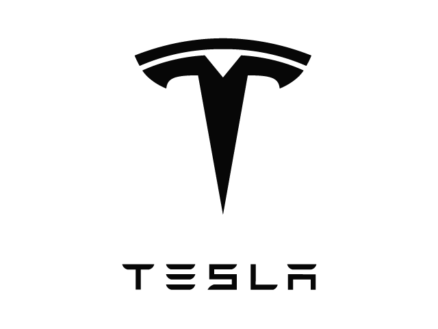
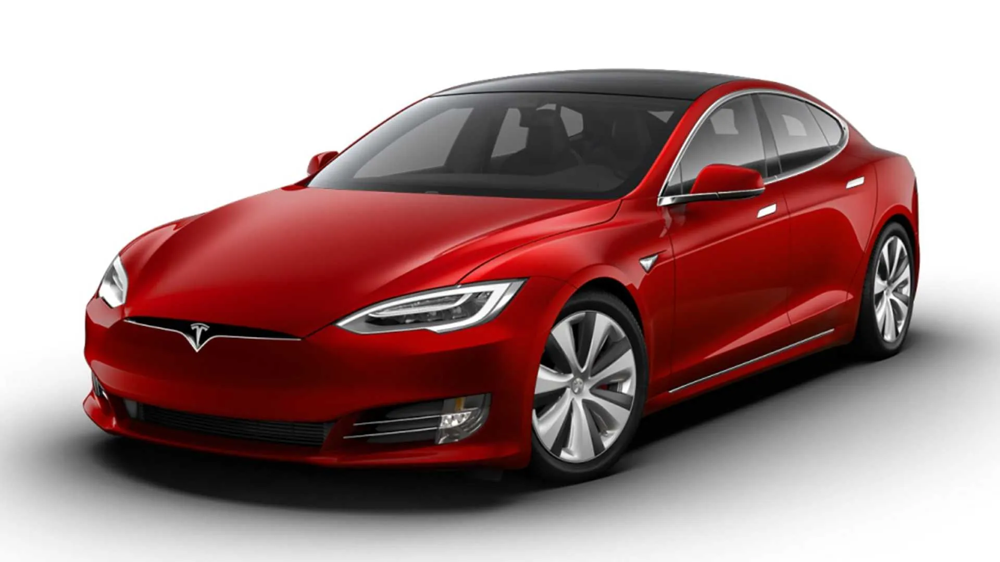
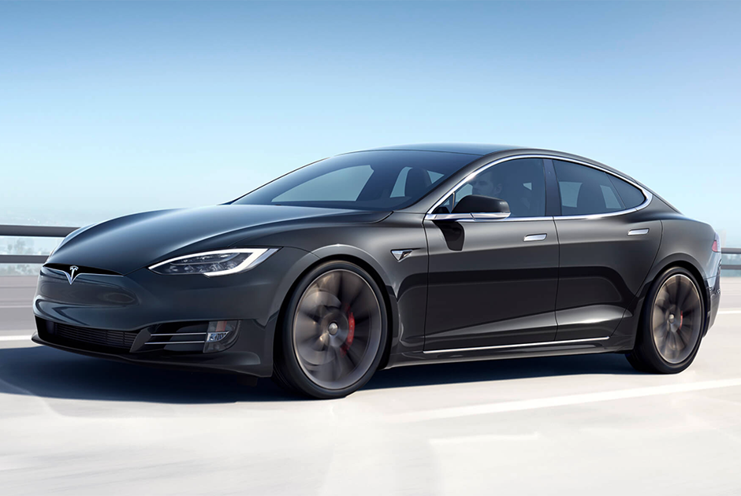
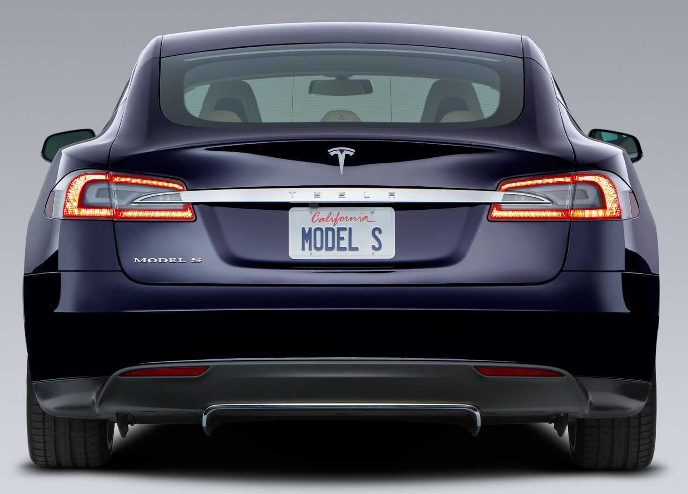
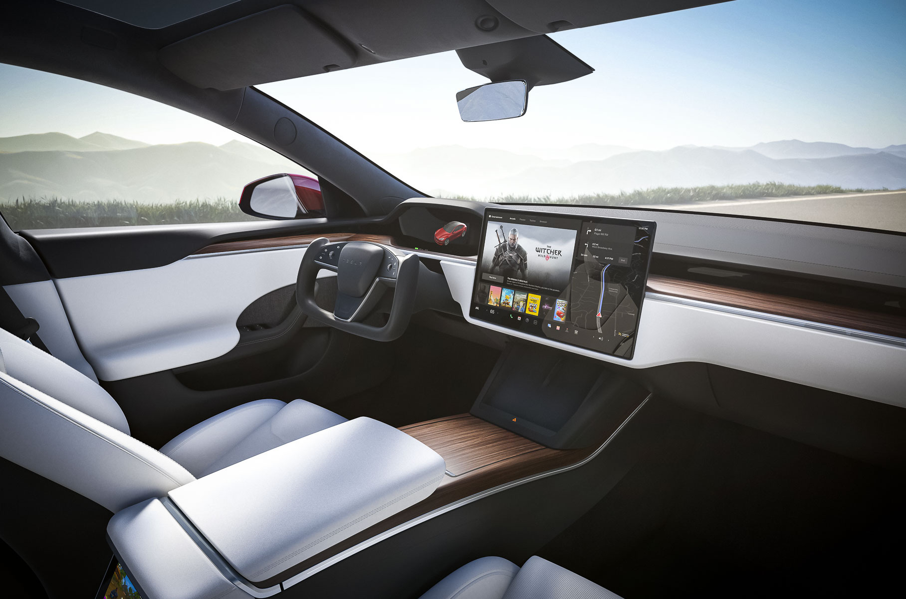
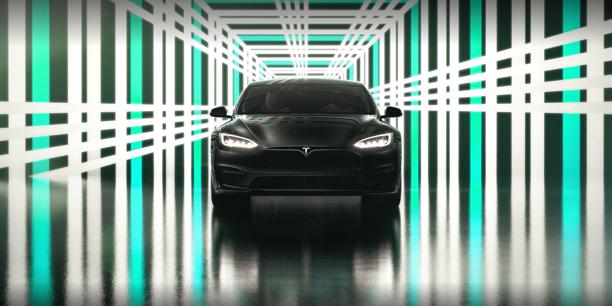
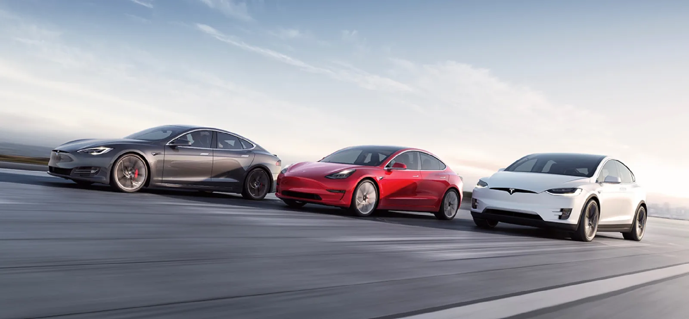
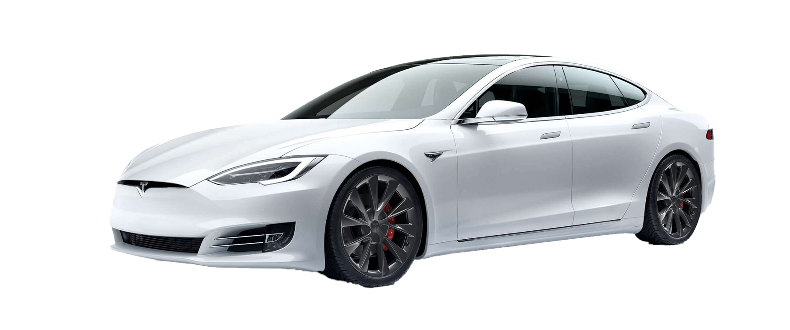

TESLA (kompaniya)


Tesla, Inc. (avvalgi nomi Tesla Motors) — AQShning elektromobillar va elektr energiyasini saqlash texnologilarini ishlab chiqaruvchi kompaniyasi[1][2][3][4].
Kompaniyaga 2003-yilda Martin Eberhard va Marc Tarpenning tomonidan asos solingan lekin Teslaning hozirgi maʼmuriyati kompaniya asoschilari safiga Elon Musk, Jeffrey Brian Straubel va Ian Wrightni ham qoʻshishadi[5][6].
Kompaniya mashhur elektrotexnik Nikola Tesla sharafiga nomlangan.
Kompaniya aksiyalari 2021-yil 8 mart kuni boʻlib oʻtgan savdolar jarayonida yanvar oyida qayd etilgan eng yuqori koʻrsatkichning uchdan bir qismini yoʻqotdi.
Kompaniyaning kapitallashuvi qariyb 300 milliard dollarga kamaydi. Yil boshida «Tesla»ning kapitallashuvi 850 milliard dollarga yaqinlashgandi[7].
2021-yil 12-martda Fremont shahridagi Tesla zavodida yongʻin sodir boʻldi[8].


TARIXI
Tesla Motors (hozirda Tesla, Inc.) kompaniyasi 2003-yil 1-iyulda Martin Eberhard va Marc Tarpenning tomonidan roʻyxatdan oʻtkazilgan.
Bir necha oydan keyin ularga Ian Wright ham qoʻshilgan. 2004-yil fevralda ular 7,5 million AQSh dollari miqdorida investitsiya jalb qilishdi, Bu pulning 6,5 millionini Elon Musk toʻlagan.
Musk direktorlar kengashi raisiga aylangach, Eberhardni bosh direktor lavozimiga tayinladi.
AQSHning Kaliforniya shtati Frimont shahrida joylashgan elektr transport vositasi ishlab chiqaruvchi „Tesla“ zavodida yongʻin sodir boʻldi.
Yongʻin zavodning qurilish ishlari olib borilayotgan qismida sodir boʻlgan, voqea joyiga oʻt oʻchiruvchilar jalb qilingan.
Yongʻin shtamplovchi uskunaning ichida suyuq alyuminiyning gidravlik suyuqlik bilan qorishib ketgani sababli kelib chiqqan.[9]
Teslaning birinchi prototiplari 2006-yil 19-iyulda Kaliforniyaning Santa-Monika shahrida rasman ommaga taqdim etildi.[10]
2006-yilda Mask 100 million dollar kapital jalb etishga muvaffaq boʻldi. Natijada, Tesla 2008-yilda oʻzining birinchi Roadster avtomobilini ishlab chiqarishni boshladi.[11]
2010-yil yanvar oyida Tesla AQSh Energetika vazirligidan 465 million dollar kredit oldi, kompaniya uni 2013-yilda qaytarib berdi.[12]
2010-yilning may oyida Tesla Kaliforniyaning Fremont shahrida Model S ishlab chiqarish uchun fabrika qurishni boshladi.[13]
Tesla 2010-yil 29-iyun kuni NASDAQʼda aksiyalarni birlamchi ommaviy joylashtirishni (IPO) boshladi va 226 million dollar yigʻib, 1956-yildagi Ford Motorʼdan keyin IPOga chiqqan birinchi Amerika avtomobil kompaniyasi boʻldi.[14]
2012-yil iyun oyida Tesla ikkinchi avtomobili Model S ni ishlab chiqarishni boshladi. 2017-yil iyul oyida Tesla Model 3 sedanini sotishni boshladi.[15]
2019-yil 14 mart kuni Tesla Model Y yangi elektr avtomobili taqdim etildi.[16]
2020-yil noyabr oyida Tesla, Uber va yana 26 ta AQSh kompaniyalari AQShda elektromobillar sonini koʻpaytirish uchun lobbichilik qiladigan Zero Emission Transport Association (ZETA) tashkilotini tuzdilar.[17]
2021-yil 25-oktabrda kompaniya kapitallashuvi 1 trillion dollardan oshdi.[18]


TAQIQ
„Wall Streat Journal“ gazetasi oʻz manbalariga asoslanib, Xitoy hukumati Amerikaning „Tesla“ kompaniyasi elektromobillari milliy xavfsizlikka tahdid solishi mumkin deb hisoblayotgani va shu bois harbiylar, strategik korxonalar xodimlari va davlat idoralari vakillariga ulardan foydalanishni taqiqlaganini aytgan. „Tesla“ avtomobillari egalariga strategik muhim korxonalar va davlat idoralari xodimlari yashaydigan uylar hududiga kirish taqiqlangan.
„China Development Forum“ (Xitoy taraqqiyot forumi)da videomuloqot orqali soʻzga chiqqan Mask kompaniya elektromobillari naqafat Xitoyda, balki dunyoning hech bir nuqtasida josuslik maqsadida ishlatilmasligini maʼlum qilgan:
Bizda har qanday maʼlumotlarning maxfiyligini taʼminlashimiz kerakligini koʻrsatuvchi muhim sabablar bor. Shunday ekan, agar „Tesla“ Xitoyda yoki boshqa joylarda josuslik qilish uchun avtoulovlardan foydalanganida, allaqachon yopilgan boʻlardi[19].
Xitoyda „Tesla“ kompaniyasiga raqobatchi paydo boʻldi. Xitoyning elektromobillarga boʻlgan talabini qondirish maqsadida „Volvo“ va „Lotus“ kompaniyalariga egalik qiluvchi „Geely“ kompaniyasi oʻzining „Zeekr“ brendi ostida elekromobillar ishlab chiqarishini maʼlum qildi. Xitoyda 2025-yilga qadar mamlakat bozorlarida sotiladigan avtomobillarning beshdan bir qismini elektomobillar tashkil etadi[20].

Texnik Nosozlik
„Tesla“ kompaniyasi texnik nosozlik sabab yangi elektromobil uchun yuzlab xaridorlari hisob raqamlaridan ularning ruxsatisiz ikkinchi marotaba pul yechib oldi. Xaridorlar pullarini qaytarib olishga urinmoqda, ammo hozirgacha hech kim bunga erisha olmagan.
kompaniya qiymati 37 dan 71 ming dollargacha boʻlgan pullarni mijozlarning ruxsatisiz, shuningdek, birorta ogohlantirishlarsiz bank hisob raqamlaridan yechib olgan[21].

Aksiyalar narxining oshishi
«Tesla» elektromobillar yetkazib berish va ishlab chiqarish boʻyicha yangi rekord oʻrnatdi. U oʻz mijozlariga chorak davomida 184,8 mingta elektromobil yetkazib bergan.
«Tesla»ning aksiyalari NASDAQ birjasida 5-aprel kuni oʻtkazilgan dastlabki savdolarda 7,9 foizdan 714 dollar qogʻozga oʻsgan. Savdo boshlanishiga bir soat qolmasdan, qimmatli qogʻozlar 711,5 dollarni tashkil qilgan va avvalgi yopilish narxiga 7,5 foiz qoʻshilgan[22].
batafsil